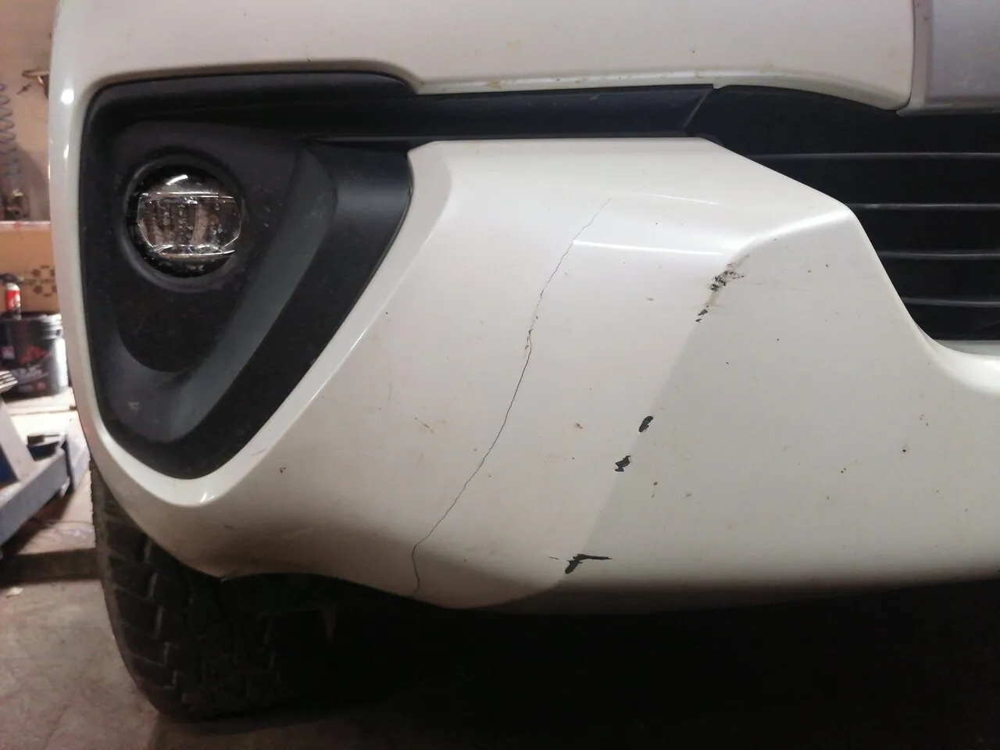
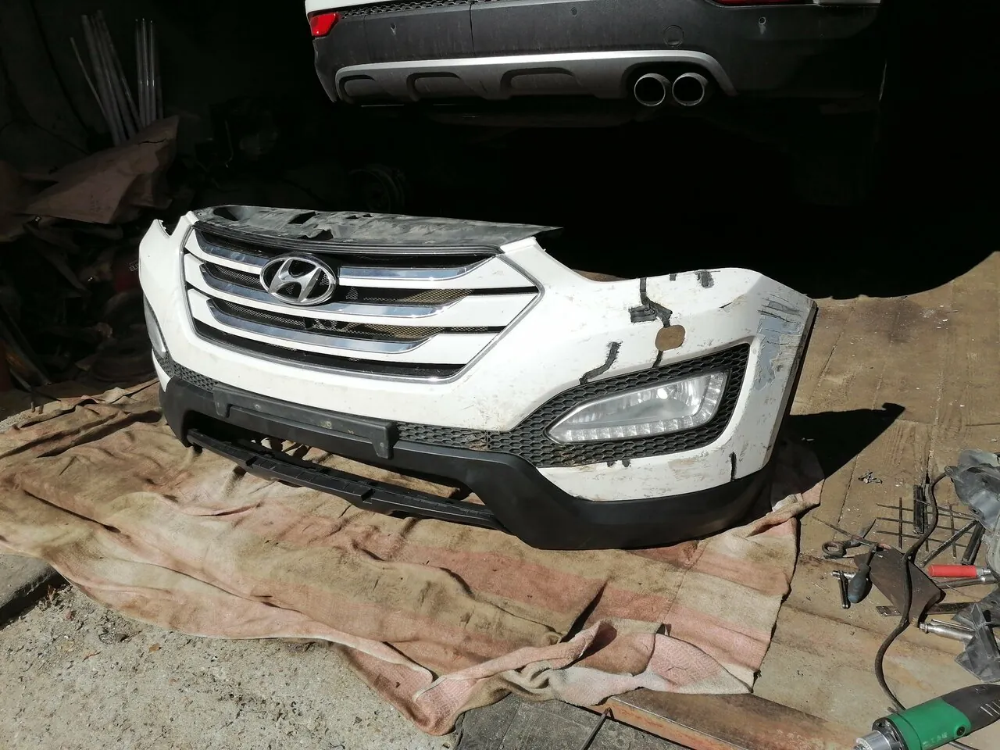
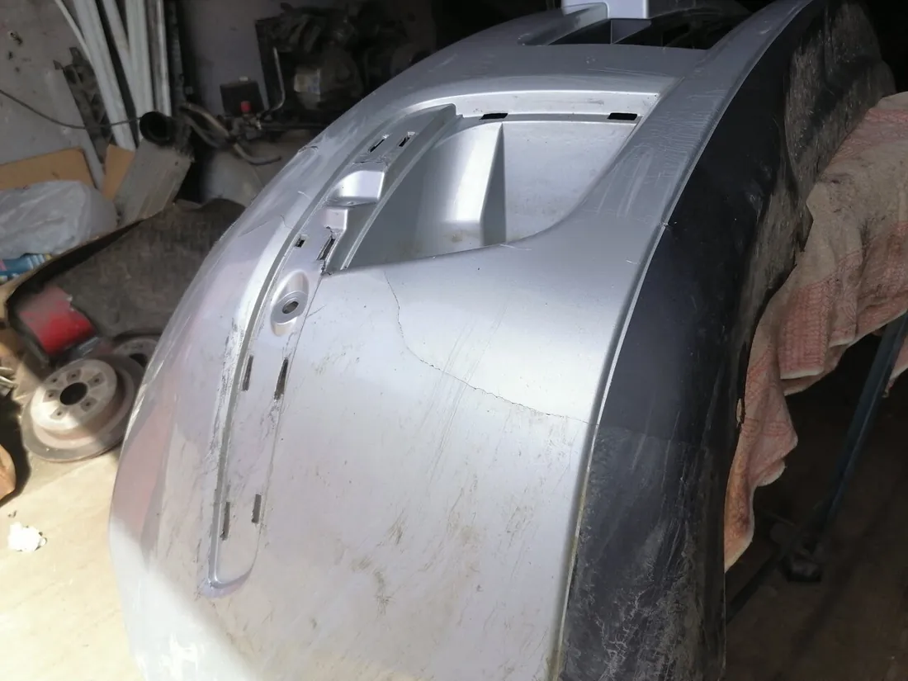
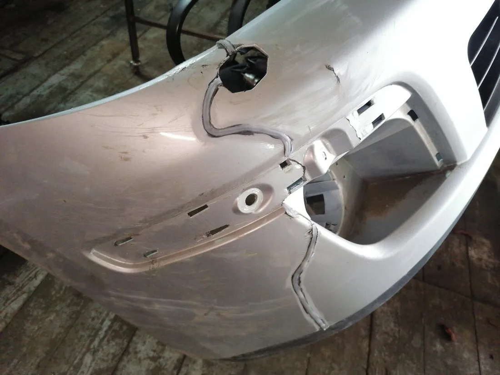
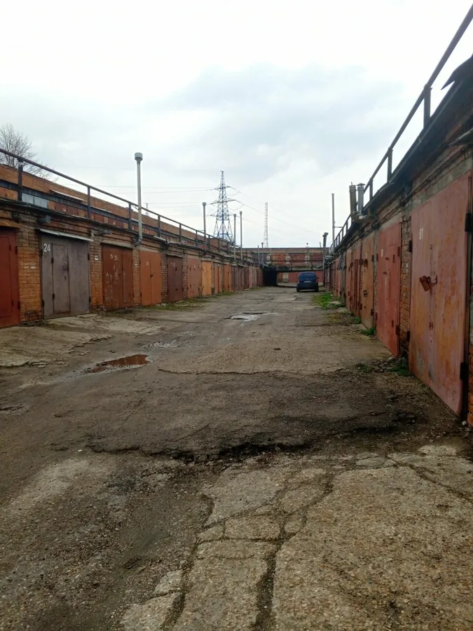

Трещины на бампере
Хорошее место 2026Коломна, Колычёво
Трещины, оторванные крепления, отколотые куски – пластик паяют, а не выбрасывают. Ремонт снятого бампера без покраски – от 2000 ₽.
Трещину запаивают по всей длине – бампер остаётся родным
«Наехал на бордюр на своём КИА СИД и вырвал бампер ( сломал крепление ). В одном автосервисе сказали, что бампер под замену, но поискав в Яндексе, нашёл мастера в ГСК, подъехав к нему узнал , что бампер ремонтопригоден.»
«В свою очередь был приятно удивлён ценой и сроками.»
Виталий Смирнов, отзыв на Яндекс Картах
Случаи из отзывов клиентов – их машины, их слова.

Трещины на бампере
«Был расколот бампер и одно ребро на нем сломано полностью. Также сломан поддон внизу, треснул. Мастер все сделал, быстро и не дорого.»
Андрей Басов«Не было куска бампера вместе с поворотником,после аварии.Хорошо что кусок остался. Припаяли на место и установили поворотник»
Кирилл Крыштопин«Была проблема с бампером, оторвал крепление крепление к крылу не рассчитал посадку машину»
Дмитрий Е.
Бампер Hyundai Santa Fe в работе
«Привозил бампер на ремонт трещин, сделали быстро, хорошо. Так как из другого города, не смог сразу забрать, согласились подождать и подержать у себя.»
Сергей Булыкин

Цены из карточки мастерской, Яндекс помечает их как «давно не обновлялось». Точную сумму назовут по фото или на месте.
Гарантия: {{условия гарантии}}. Оплата наличными и безналичная.
Василий Викторович берётся и за механику: ГРМ, ступичные подшипники, диагностика, ТО. Есть выездная диагностика.
Работы из карточки
Ремонт бамперовКузовной ремонтСваркаЗамена ГРМХодоваяТормозаДвигательСистема охлажденияРадиаторыВыхлопТопливная системаСтартеры и генераторыАвтоэлектрикаФарыСигнализацияКомпьютерная диагностикаВыездная диагностикаЗамена маслаЗапчасти под заказ
Машины
ОтечественныеКорейскиеЯпонскиеКитайскиеЕвропейскиеBMWКоммерческиеСпецтехника
4,725 оценок и 16 отзывов на Яндекс Картах
Наехал на бордюр на своём КИА СИД и вырвал бампер ( сломал крепление ). В одном автосервисе сказали, что бампер под замену, но поискав в Яндексе, нашёл мастера в ГСК, подъехав к нему узнал , что бампер ремонтопригоден. В свою очередь был приятно удивлён ценой и сроками. Всё сделал быстро, чётко и качественно. Профессионал своего дела!
Что то случилось с машиной, нашла это сервис по рекомендациям. Провели диагностику, нашли проблему, мастер предложил несколько вариантов, ремонта, выбрали средний. Заказали запчасти, через 15 минут уже привезли, в этот же вечер машина была готова, но оставила её еще, бонусом починили треснутый бампер Большое спасибо Василию!
Обслуживаем 4 машины у этого мастера не первый год, все отлично, лишних денег не возьмет, не будет говорить что нужно поменять пол машины из-за "царапины", в целом считаю его лучшим в городе.
Отличный механик , подход эксперта , поменял у него грм на Сантафе очень доволен проделанной работы , ценник не как в сервисе и запчасти с гарантие , Василий Викторович спасибо большое 🤝 знал бы что можно оставить отзыв сделал бы пару фотографий у вас а так извините без них
Отличное место. Был расколот бампер и одно ребро на нем сломано полностью. Также сломан поддон внизу, треснул. Мастер все сделал, быстро и не дорого. Очень доволен. Буду знать теперь если что куда обратиться.
Обратился с ремонтом бампера Хонда црв.Работа проведена КАЧЕСТВЕННО в сроки по приемлемой цене.РЕКОМЕНДУЮ.
Привозил бампер на ремонт трещин, сделали быстро, хорошо. Так как из другого города, не смог сразу забрать, согласились подождать и подержать у себя. Очень доволен, буду обращаться еще
Очень доволен выполненной работой. Не было куска бампера вместе с поворотником,после аварии.Хорошо что кусок остался. Припаяли на место и установили поворотник быстро ,качественно и по хорошей цене.
Заезжал на замену ступичных подшипников. Быстро, качественно, профессионально!
Очень грамотный специалист, уже два года обслуживаю у него машину, всем довольна!
Была проблема с бампером, оторвал крепление крепление к крылу не рассчитал посадку машину, созвонились договорись в сделали все быстро и качественно спасибо))))
Спасибо за обслуживание , все качественно и цены шикарные
Мастерская в гаражном кооперативе. Перед поездкой позвоните – подскажут, куда заезжать.

Открыть на Яндекс КартахТочка на карте и маршрут